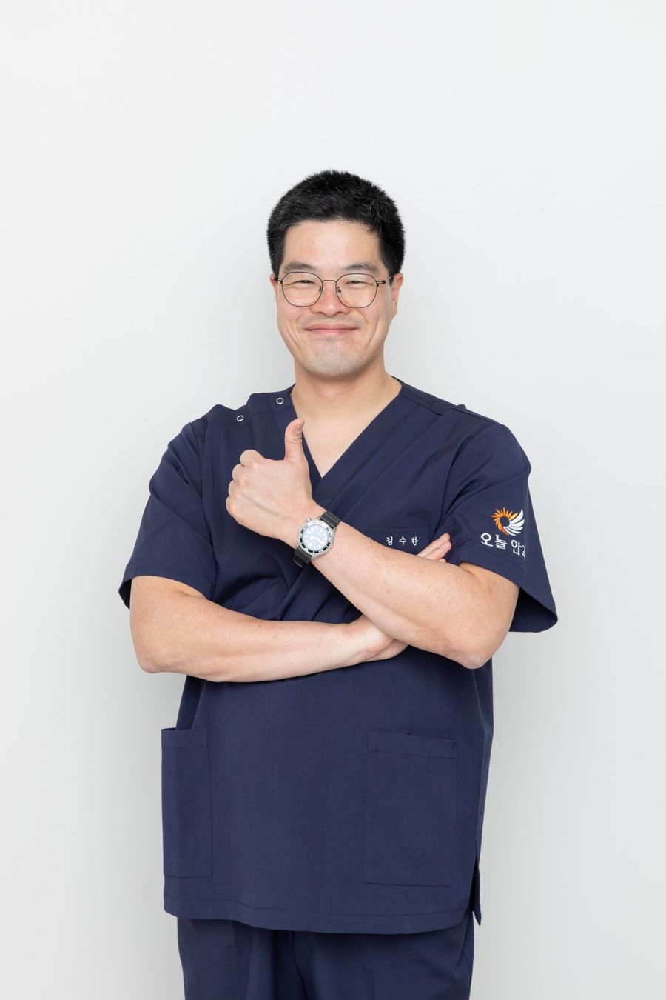
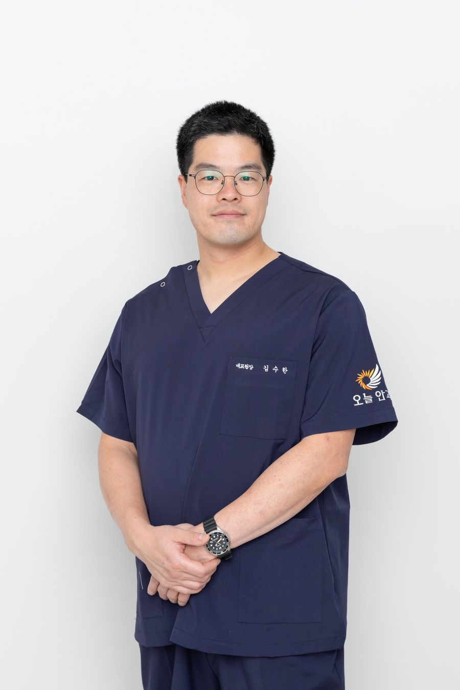

연세 오늘안과YONSEI TODAY EYE CLINIC
연세 오늘안과YONSEI TODAY EYE CLINIC
ABOUT
오늘안과 · 의료진 소개
오늘안과의 약속
불편한 그날, 오늘 바로 확인하도록
01
원장 직접 진료
진료와 설명, 치료 계획까지 원장이 직접 함께합니다.
02
대학병원급 정밀 검사 장비
초광각 망막촬영, OCT, 시야검사 등 정밀 검사 장비를 갖추고 있습니다.
03
당일 응급 수술 가능 (4시 이전 내원 시)
4시 이전에 내원하시면 진료 결과에 따라 당일 응급 수술이 가능합니다.

의료진 소개
김수한 대표원장
망막 · 황반 · 합병 백내장 진료
학력 · 경력
· 최연소 중졸 / 고졸 검정고시 합격
· 연세대학교 의학사 / 의학박사
· 원주세브란스병원 안과 전공의
· 신촌세브란스병원 망막 임상강사
· (전) 연세대학교 원주의과대학 안과학교실 교수
· (전) 연세대학교 원주의과대학 학생부장
· (전) 소중한빛안과 원장
· (전) 세브란스 안과 의사회(세목회) 이사
연수 · 활동
· 일본 가고시마대학교 안과 연수
· 2018 평창 동계올림픽 평창폴리클리닉 안과 담당의
· 원주시장 표창
학회
· 대한안과학회 정회원
· 한국망막학회 정회원
· 한국포도막학회 정회원
· 한국백내장굴절수술학회 정회원
